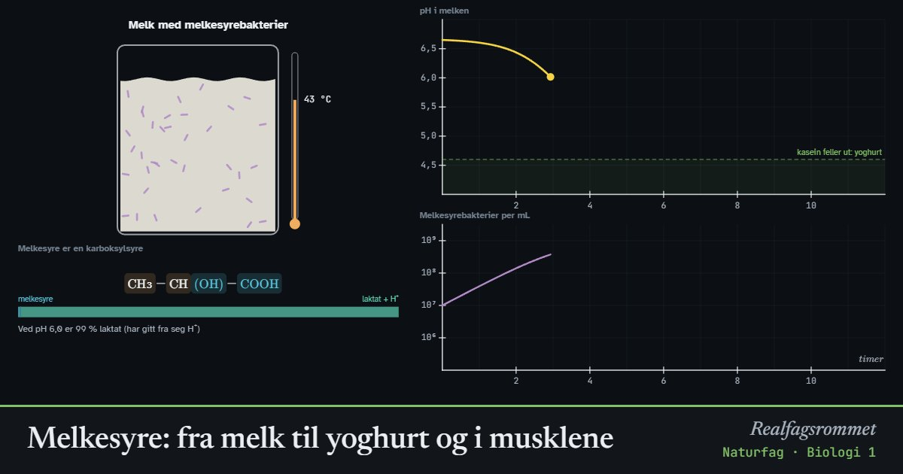

Melkesyre: fra melk til yoghurt og i musklene
Melkesyre er en karboksylsyre som dannes når sukker brytes ned uten oksygen. Melkesyrebakterier gjør melk om til yoghurt, og musklene lager melkesyre når de jobber hardere enn oksygentilførselen rekker.
Start animasjonen
Formler
Om animasjonen
Melkesyre (2-hydroksypropansyre) har både en karboksylgruppe, –COOH, og en hydroksylgruppe, –OH. Karboksylgruppen kan gi fra seg H⁺. Når pH er høyere enn 3,9, finnes det meste som laktat, ionet uten H⁺.
Yoghurt: Melkesyrebakterier bryter ned melkesukker (laktose) til melkesyre. pH synker fra 6,6. Rundt pH 4,6 klumper melkeproteinet kasein seg sammen, og melken blir tykk. Yoghurten holder seg lenge fordi få andre bakterier tåler så lav pH. Bakteriene vokser best ved rundt 42 °C. I kjøleskapet står de nesten stille, og over omtrent 50 °C dør de.
Musklene: Ved lav belastning brytes glukose helt ned til CO₂ og vann i mitokondriene. Ved hard belastning lager cellene i tillegg laktat og H⁺, fordi det gir ATP raskt uten oksygen. H⁺ gjør musklene sure og bidrar til at de blir slitne. Laktatet brukes som brensel igjen når belastningen går ned.
Melkesyre er ikke årsaken til at du er støl dagen etter trening. Laktatet er borte fra blodet etter en times tid, mens stølheten skyldes små skader i muskelfibrene. Modellene er forenklet.
Prøv dette
- Hvor lang tid tar det før melken blir til yoghurt ved 43 °C? Hva skjer ved 4 °C og ved 55 °C?
- Hvorfor blir melken tykk når pH synker?
- Hvor stor andel av melkesyren er laktat i yoghurt (pH ca. 4,4) og i muskelen (pH ca. 7)?
- Finn belastningen der laktatet i blodet passerer 4 mmol/L. Hva skjer når du går fra spurt til hvile?
Kompetansemål
- Naturfag: Karbonforbindelser og karbonets betydning for livet
- Naturfag: Syrer og baser (også i yrkesfagene)
- Biologi 1: Livsprosesser, anatomi og fysiologi
Mer om kroppen: nerver, hormoner og immunforsvar
- Nerveimpulsen: aksjonspotensialet
- Blodsukker: insulin og glukagon
- Hormoner og menstruasjonssyklusen
- Immunforsvaret og vaksiner